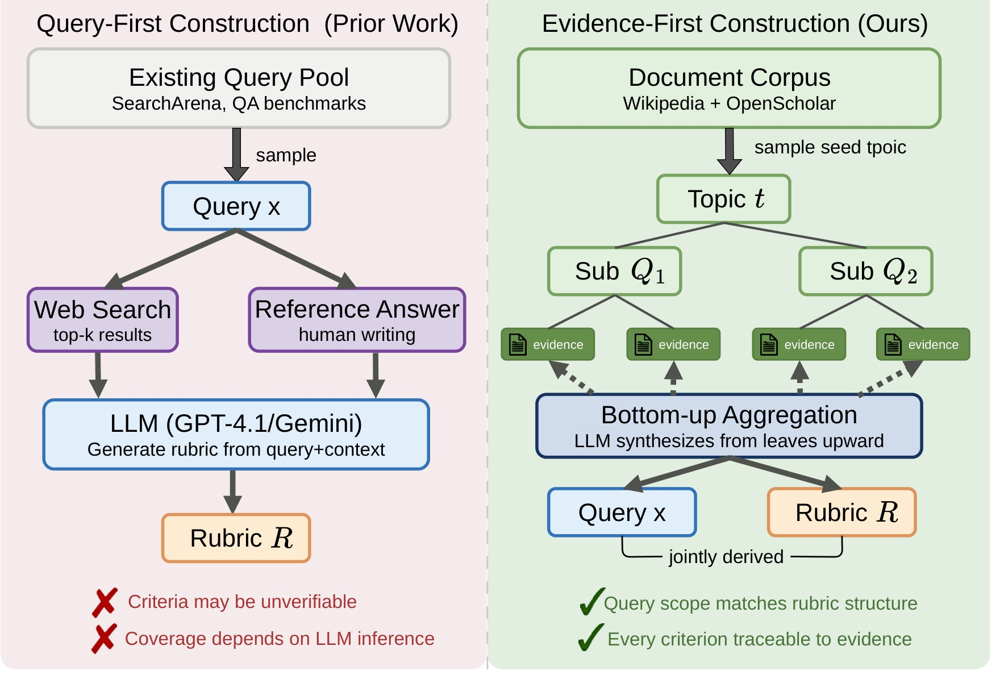
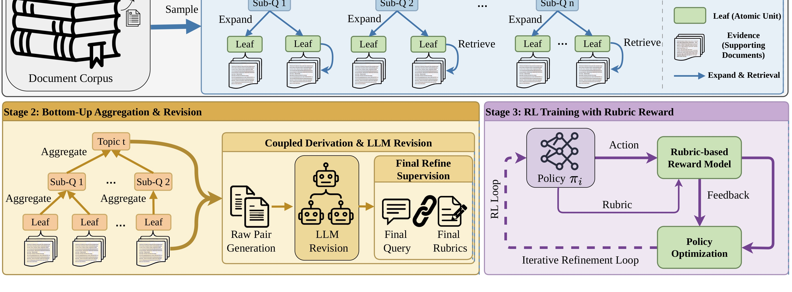
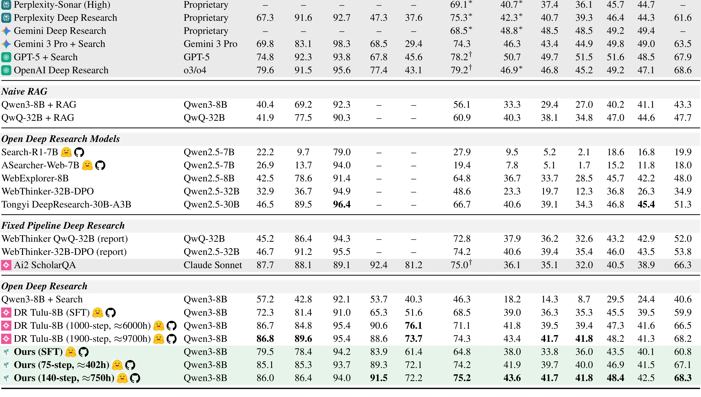
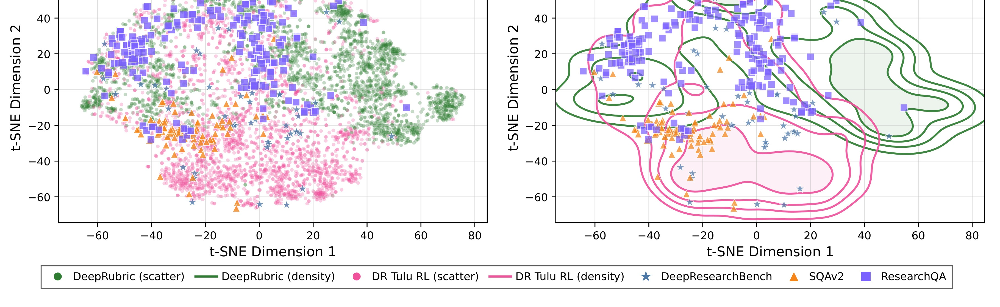

DEEPRUBRIC: Evidence-Tree Rubric Supervision for Efficient Reinforcement Learning of Deep Research Agents
DEEPRUBRIC: Evidence-Tree Rubric Supervision for Efficient Reinforcement Learning of Deep Research Agents 这篇论文的中文读法是“DeepRubric：用证据树 Rubric 监督深度研究 Agent 强化学习”。论文入口是 arXiv:2606.17029，公开日期按 arXiv 记录为 2026-06-15，类别为 cs.CL。作者包括 Minghang Zhu, Chuyang Wei, Junhao Xu, Yilin Cheng, Zhumin Chen, Jiyan He；本轮目录仍沿用自动化产物的“多校”前缀，机构字段没有逐个作者主页核验。代码/项目页状态：PDF 首页脚注提示项目代码入口，但本轮没有独立打开项目页做可用性核验；正文只把 arXiv 与 PDF 作为事实来源。 本文在日报中归入“LLM”，入选原因是：把深度研究 Agent 的奖励从 query-first rubric 生成改为 evidence-first 构造，让评价准则先绑定可追溯证据，再用于反向合成训练 query 与 rubric。
最重要的背景/问题（摘要/引言译文）：deep research agent 需要把检索证据组织成长报告，rubric reward 能把报告质量转成可检查奖励，但 query-first 做法依赖模型从用户问题中猜出信息需求，容易漏掉证据范围和评价条件。DeepRubric 先从语料构造 evidence tree，再由同一棵树派生 query 与 rubric，使每条准则都能回到证据并覆盖任务范围。
1. 背景和问题
过去很多 deep research agent 评测只在最终答案或人工评分上闭环，训练时很难知道报告中的哪条证据缺失、哪条推理链不成立、哪条引用没有支撑结论。Rubric reward 的价值在于把长报告拆成可检查准则，但如果准则本身来自对 query 的事后猜测，奖励就会带着噪声进入强化学习。
论文把问题推进了一步：不是问“能不能让 LLM 写出 rubric”，而是问“rubric 是否先被证据结构约束”。这对研究报告任务尤其关键，因为同一个 query 可能暗含背景、比较、时效、引用和限定条件；模型如果只看 query，容易生成听起来合理但不可验证的条目。
DeepRubric 的引言还把效率问题讲清楚了。高质量人工 rubric 昂贵，普通 LLM 自动 rubric 又不稳定；如果奖励准则无法稳定覆盖证据需求，RL 过程会把模型推向迎合表面指标，而不是提升证据组织能力。
因此这篇论文真正的对象不是单个问答任务，而是“证据、问题、评价准则、奖励”四者之间的接口。这个接口一旦明确，后续才能做数据构造、训练消融、成本比较和失败样例分析。
这一背景也解释了为什么今天六篇论文会被放在一起看。它们都不是单纯换一个更大的模型，而是把过去藏在系统里的中间接口拿出来定义：DeepRubric 定义证据到 reward 的接口，TokenPilot 定义上下文到缓存的接口，KVEraser 定义文本删除到 KV 状态的接口，OneRank 定义任务目标到 Transformer channel 的接口，ReaEmb 定义语义推理到协同 embedding 的接口，HoloRec 定义层次 semantic code 到生成式 reasoning 的接口。
对读者来说，判断这类论文是否有价值，不能只问“指标有没有涨”。更关键的问题是：作者是否明确了输入边界，是否把中间状态变成可观察对象，是否在实验里证明该状态不可替代，是否说明了成本和失败边界。下面的方法与实验解读都按这四个问题展开。
更具体地说，DeepRubric 讨论的不是一个孤立模型，而是一条从输入、状态、训练信号到系统约束的链路。输入侧是文档语料、topic、sub-question、leaf evidence 和 query-rubric 对；状态侧是从证据树叶节点到中间问题再到 rubric criteria 的可追溯结构；信号侧是每条 criteria 的 pass/fail、引用准确性、答案覆盖度和综合 rubric 分；部署侧则对应研究报告生成、企业内部调研助手和多源证据审计。这四层如果任一层缺失，论文结论就会从机制解释退化为经验结果。
旧版笔记的问题在于直接搬入英文摘要残句，使读者难以判断作者到底在解决哪个中文问题。修复版把摘要和引言翻成中文后，核心矛盾更清楚：rubric 生成仍可能把证据遗漏写成合理准则，必须保留人工抽检和证据回链。这句话也是后续所有图表选择和实验解释的边界。
从研究趋势看，DeepRubric 属于“把隐式中间状态显式化”的工作。它的意义不在于发明一个漂亮名词，而在于让证据树约束的 rubric reward可以被拆分、记录、替换和消融。对推荐系统或 Agent 系统来说，可消融的中间状态往往比最终分数更能指导工程改造。
因此读这篇论文时，我不会先问它是否可以马上上线，而会先问三件事：论文有没有说明状态从哪里来；有没有说明状态如何影响输出；有没有用SQAv2、ResearchQA、DRB、训练步数消融、训练 query 分布证明该状态不是冗余变量。只有这三点都成立，后续才值得讨论复现成本和业务迁移。
还需要注意的是，今天六篇论文都和近期自动化精读里的长记忆、生成式推荐、多任务排序方向相连。DeepRubric 的位置比较清晰：它把证据树约束的 rubric reward推进到可验收接口层，而不是停留在抽象概念层。
从读者角度，DeepRubric 的背景章还要补一个判断标准：它是否把evidence-first rubric 构造的问题说成了可失败、可检查的形式。可失败意味着我们知道什么情况会让方法不成立；可检查意味着能用SQAv2、ResearchQA、DRB、citation precision/recall 和 rubric 综合分或对应分桶观察到变化。没有这两个标准，红字问题句再醒目也只是口号。
这也是为什么修复版不再把英文摘要整段贴进来。摘要原文当然重要，但精读笔记应该完成翻译和压缩：把作者说的任务对象、旧方法缺口、新方法承诺和验证口径转成中文。对 DeepRubric 来说，这四项分别落在证据树、query-rubric 对、rubric reward、训练 query 分布和SQAv2、ResearchQA、DRB、citation precision/recall 和 rubric 综合分上。
如果把这篇论文放到后续研究队列，我会先给它建立一个本地检查表：输入字段是否可获得，状态是否可日志化，训练信号是否能分解，成本是否可度量，失败样例是否和rubric 看似合理但无法回到证据，或者 query 覆盖范围被模型先验带偏有关。这个检查表比复述摘要更能指导下一步。
2. 方法
2.1 证据树扩展与原子评价目标
第一阶段从文档语料出发，自顶向下扩展 topic、sub-question、leaf evidence 和 atomic units。这样做把原本模糊的“报告应覆盖什么”拆成树状证据需求，rubric 不再是模型凭 query 临场补出的清单，而是由叶节点证据和中间问题共同约束的检查项。
这一模块要先回答“信息从哪里来”。在 DeepRubric 中，输入不是一个抽象变量，而是和论文场景强绑定的对象：可能是 evidence tree、context segment、erased span、task token、item attribute 或 semantic code。只有把输入边界写清楚，后面的训练目标和实验表才有意义。

Figure 1 是原论文中的真实图对象，本次裁剪只截取图内结构，避免把 caption 或普通段落误当作图片。它在这里的作用是把 DeepRubric 的核心论证落到可视化结构上：读者可以直接看到模块、箭头、状态或曲线如何对应正文正在讨论的机制。和旧版页带截图不同，这张图不再承担装饰作用，而是作为后续方法解释或实验判断的锚点。这张图尤其适合用来检查论文的问题定义是否成立：它展示了旧范式和新范式在信息流上的差别，帮助判断作者是否真的解决了 把深度研究 Agent 的奖励从 query-first rubric 生成改为 evidence-first 构造，让评价准则先绑定可追溯证据，再用于反向合成训练 query 与 rubric。 这一矛盾。
围绕“证据树扩展与原子评价目标”读 证据树约束的 rubric reward 时，我会先检查输入字段是否闭合。这里的关键输入包括文档语料、topic、sub-question、leaf evidence 和 query-rubric 对；如果复现代码没有把这些字段分开记录，而是提前拼成一段不可追踪文本或一个混合向量，后续即使得到相近指标，也无法确认收益来自论文声称的机制。
在“证据树扩展与原子评价目标”这一小节里，第二层要看状态更新。从证据树叶节点到中间问题再到 rubric criteria 的可追溯结构不是论文插图里的装饰概念，而是训练和推理之间共享的中间对象。实现时应给它留下日志、版本号和消融开关，至少能回答三件事：它在什么时候产生，和哪些样本绑定，被删除或替换后哪些指标会变化。
第三层是训练信号。每条 criteria 的 pass/fail、引用准确性、答案覆盖度和综合 rubric 分应当能回到“证据树扩展与原子评价目标”这一模块，而不是只在最终输出上结算。若只有总体 loss 或平均分，模型可能学到数据集捷径；若能拆到模块输入、状态和输出，就能判断该模块是必要结构还是只提供了额外容量。
最后要把推理路径和部署约束一起看。研究报告生成、企业内部调研助手和多源证据审计场景通常有延迟、内存、缓存命中、样本刷新或线上策略约束；证据树扩展与原子评价目标 如果只在离线脚本里存在，却无法映射到服务时状态，就只能算研究原型，不能直接进入工程设计。
如果要把这一模块接到现有系统，我会先做最小闭环：保留原 baseline，只替换与“证据树扩展与原子评价目标”直接相关的状态；再加分桶和成本指标。这样能区分结构收益、数据收益和训练预算收益，避免把多个变量混在一次实验里。
在实现层面，“证据树扩展与原子评价目标”还需要一套负例思维。也就是说，不只证明它在正向流程中存在，还要能构造一个去掉该状态、替换该输入、打乱该顺序或冻结该参数的对照。若对照后SQAv2、ResearchQA、DRB、citation precision/recall 和 rubric 综合分几乎不变，说明这个模块可能只是叙事包装；若变化集中在论文预期的分桶或成本项上，机制解释才更可信。
围绕“证据树扩展与原子评价目标”，我还会检查它和其他模块之间的接口张力。证据树、query-rubric 对、rubric reward、训练 query 分布之间不是线性堆叠关系，而是互相约束：前一个模块给出候选状态，当前模块决定状态如何被压缩或对齐，后一个模块把状态变化转成评价信号。复现时如果省略其中任意一端，剩下的公式或图示都会失去上下文。
修复补充：1.jpg 在本轮被重新定义为单个 PDF 图表对象，而不是页面截图。对 DeepRubric 来说，这张图/表的验收重点有三项：第一，读者能直接看到原论文的结构、坐标轴、表头或指标名；第二，它插入的位置和正文正在讨论的问题、方法或实验一致；第三，它不把作者信息、摘要、caption 或普通段落混入图片主体。后续如果继续精修，应优先复核这张图/表对应的 PDF caption 和正文段落，而不是只看图片是否清晰。
2.2 Query-rubric 反向合成
第二阶段不是先有人类 query 再写 rubric，而是从 evidence tree 反向生成 query 与 rubric。这个方向很重要：query 的范围由证据树决定，rubric 的每条 criteria 也能追溯到 evidence unit，训练样本天然包含“问题边界”和“可核验条件”。
第二个要点是中间状态如何更新。DeepRubric 的设计并不是把所有信息拼接后交给一个黑箱，而是明确给出状态转移或表示对齐方式。这个位置最容易出现实现偏差：如果复现者省略状态记录，只保留最终 loss，就无法解释论文声称的机制。
本文的方法链中有一个值得保留的符号化读法：
符号解释：这里用 y 表示研究报告，q 表示合成 query，E_i 表示 evidence tree 中支撑某条准则的证据单元，c_i 是第 i 条 rubric 检查。它不是逐字转写某个单一公式，而是把论文的 rubric reward 接口整理成读者可复核的符号读法：奖励必须来自证据可追溯的 criteria，而不是一个整体偏好分。

Figure 2 是原论文中的真实图对象，本次裁剪只截取图内结构，避免把 caption 或普通段落误当作图片。它在这里的作用是把 DeepRubric 的核心论证落到可视化结构上：读者可以直接看到模块、箭头、状态或曲线如何对应正文正在讨论的机制。和旧版页带截图不同，这张图不再承担装饰作用，而是作为后续方法解释或实验判断的锚点。放在方法章，是因为它对应具体模块的输入、输出和中间状态。复现时应把图中的每条箭头翻译成日志字段、训练样本字段或 serving 阶段的状态更新。
围绕“Query-rubric 反向合成”读 证据树约束的 rubric reward 时，我会先检查输入字段是否闭合。这里的关键输入包括文档语料、topic、sub-question、leaf evidence 和 query-rubric 对；如果复现代码没有把这些字段分开记录，而是提前拼成一段不可追踪文本或一个混合向量，后续即使得到相近指标，也无法确认收益来自论文声称的机制。
在“Query-rubric 反向合成”这一小节里，第二层要看状态更新。从证据树叶节点到中间问题再到 rubric criteria 的可追溯结构不是论文插图里的装饰概念，而是训练和推理之间共享的中间对象。实现时应给它留下日志、版本号和消融开关，至少能回答三件事：它在什么时候产生，和哪些样本绑定，被删除或替换后哪些指标会变化。
第三层是训练信号。每条 criteria 的 pass/fail、引用准确性、答案覆盖度和综合 rubric 分应当能回到“Query-rubric 反向合成”这一模块，而不是只在最终输出上结算。若只有总体 loss 或平均分，模型可能学到数据集捷径；若能拆到模块输入、状态和输出，就能判断该模块是必要结构还是只提供了额外容量。
最后要把推理路径和部署约束一起看。研究报告生成、企业内部调研助手和多源证据审计场景通常有延迟、内存、缓存命中、样本刷新或线上策略约束；Query-rubric 反向合成 如果只在离线脚本里存在，却无法映射到服务时状态，就只能算研究原型，不能直接进入工程设计。
把这个模块放到全文结构里看，它承担的是连接问题定义和实验指标的桥。前一节解释为什么需要证据树约束的 rubric reward，这一节说明如何形成可学习状态，后一节才用SQAv2、ResearchQA、DRB、训练步数消融、训练 query 分布来验证。少掉这一步，论文就会退回“描述一个现象，然后展示一张结果表”的弱结构。
在实现层面，“Query-rubric 反向合成”还需要一套负例思维。也就是说，不只证明它在正向流程中存在，还要能构造一个去掉该状态、替换该输入、打乱该顺序或冻结该参数的对照。若对照后SQAv2、ResearchQA、DRB、citation precision/recall 和 rubric 综合分几乎不变，说明这个模块可能只是叙事包装；若变化集中在论文预期的分桶或成本项上，机制解释才更可信。
围绕“Query-rubric 反向合成”，我还会检查它和其他模块之间的接口张力。证据树、query-rubric 对、rubric reward、训练 query 分布之间不是线性堆叠关系，而是互相约束：前一个模块给出候选状态，当前模块决定状态如何被压缩或对齐，后一个模块把状态变化转成评价信号。复现时如果省略其中任意一端，剩下的公式或图示都会失去上下文。
修复补充：2.jpg 在本轮被重新定义为单个 PDF 图表对象，而不是页面截图。对 DeepRubric 来说，这张图/表的验收重点有三项：第一，读者能直接看到原论文的结构、坐标轴、表头或指标名；第二，它插入的位置和正文正在讨论的问题、方法或实验一致；第三，它不把作者信息、摘要、caption 或普通段落混入图片主体。后续如果继续精修，应优先复核这张图/表对应的 PDF caption 和正文段落，而不是只看图片是否清晰。
2.3 Rubric reward 与强化学习接口
训练时，报告候选会被逐条 rubric criteria 检查，reward 由可验证准则组成。论文关注的不是一个黑箱分数，而是把 citation precision、citation recall、answer quality 和 composite rubric 等拆到训练信号里，让 Agent 知道哪些类型的错误会被惩罚。
第三个要点是训练信号如何回到该模块。无论是 reward、contrastive loss、多任务损失还是 reconstruction objective，都必须能指向具体状态。若信号只在最终输出上结算，模型可能学到捷径，而不是作者希望的接口行为。
围绕“Rubric reward 与强化学习接口”读 证据树约束的 rubric reward 时，我会先检查输入字段是否闭合。这里的关键输入包括文档语料、topic、sub-question、leaf evidence 和 query-rubric 对；如果复现代码没有把这些字段分开记录，而是提前拼成一段不可追踪文本或一个混合向量，后续即使得到相近指标，也无法确认收益来自论文声称的机制。
在“Rubric reward 与强化学习接口”这一小节里，第二层要看状态更新。从证据树叶节点到中间问题再到 rubric criteria 的可追溯结构不是论文插图里的装饰概念，而是训练和推理之间共享的中间对象。实现时应给它留下日志、版本号和消融开关，至少能回答三件事：它在什么时候产生，和哪些样本绑定，被删除或替换后哪些指标会变化。
第三层是训练信号。每条 criteria 的 pass/fail、引用准确性、答案覆盖度和综合 rubric 分应当能回到“Rubric reward 与强化学习接口”这一模块，而不是只在最终输出上结算。若只有总体 loss 或平均分，模型可能学到数据集捷径；若能拆到模块输入、状态和输出，就能判断该模块是必要结构还是只提供了额外容量。
最后要把推理路径和部署约束一起看。研究报告生成、企业内部调研助手和多源证据审计场景通常有延迟、内存、缓存命中、样本刷新或线上策略约束；Rubric reward 与强化学习接口 如果只在离线脚本里存在，却无法映射到服务时状态，就只能算研究原型，不能直接进入工程设计。
另一个容易忽略的点是失败样例。rubric 生成仍可能把证据遗漏写成合理准则，必须保留人工抽检和证据回链，所以复现时不要只采集成功轨迹或平均指标；要保留模块输入错误、状态漂移、奖励误判和极端样本，才能知道论文机制在什么条件下会失效。
在实现层面，“Rubric reward 与强化学习接口”还需要一套负例思维。也就是说，不只证明它在正向流程中存在，还要能构造一个去掉该状态、替换该输入、打乱该顺序或冻结该参数的对照。若对照后SQAv2、ResearchQA、DRB、citation precision/recall 和 rubric 综合分几乎不变，说明这个模块可能只是叙事包装；若变化集中在论文预期的分桶或成本项上，机制解释才更可信。
围绕“Rubric reward 与强化学习接口”，我还会检查它和其他模块之间的接口张力。证据树、query-rubric 对、rubric reward、训练 query 分布之间不是线性堆叠关系，而是互相约束：前一个模块给出候选状态，当前模块决定状态如何被压缩或对齐，后一个模块把状态变化转成评价信号。复现时如果省略其中任意一端，剩下的公式或图示都会失去上下文。
2.4 训练数据分布与泛化评估
作者还分析训练 query 在 embedding 空间里的分布，目的是说明 evidence-first 样本不是简单复制 benchmark query，而是在语义范围和任务难度上形成更丰富覆盖。这个部分直接回应了“自动合成数据是否只是在重述语料”的风险。
最后一个模块通常承担泛化、效率或部署约束。DeepRubric 在这里要证明方法不是只在一个静态设置里有效，而是能在不同样本、不同任务长度或不同目标之间保持相对稳定。
围绕“训练数据分布与泛化评估”读 证据树约束的 rubric reward 时，我会先检查输入字段是否闭合。这里的关键输入包括文档语料、topic、sub-question、leaf evidence 和 query-rubric 对；如果复现代码没有把这些字段分开记录，而是提前拼成一段不可追踪文本或一个混合向量，后续即使得到相近指标，也无法确认收益来自论文声称的机制。
在“训练数据分布与泛化评估”这一小节里，第二层要看状态更新。从证据树叶节点到中间问题再到 rubric criteria 的可追溯结构不是论文插图里的装饰概念，而是训练和推理之间共享的中间对象。实现时应给它留下日志、版本号和消融开关，至少能回答三件事：它在什么时候产生，和哪些样本绑定，被删除或替换后哪些指标会变化。
第三层是训练信号。每条 criteria 的 pass/fail、引用准确性、答案覆盖度和综合 rubric 分应当能回到“训练数据分布与泛化评估”这一模块，而不是只在最终输出上结算。若只有总体 loss 或平均分，模型可能学到数据集捷径；若能拆到模块输入、状态和输出，就能判断该模块是必要结构还是只提供了额外容量。
最后要把推理路径和部署约束一起看。研究报告生成、企业内部调研助手和多源证据审计场景通常有延迟、内存、缓存命中、样本刷新或线上策略约束；训练数据分布与泛化评估 如果只在离线脚本里存在，却无法映射到服务时状态，就只能算研究原型，不能直接进入工程设计。
如果要把这一模块接到现有系统，我会先做最小闭环：保留原 baseline，只替换与“训练数据分布与泛化评估”直接相关的状态；再加分桶和成本指标。这样能区分结构收益、数据收益和训练预算收益，避免把多个变量混在一次实验里。
在实现层面，“训练数据分布与泛化评估”还需要一套负例思维。也就是说，不只证明它在正向流程中存在，还要能构造一个去掉该状态、替换该输入、打乱该顺序或冻结该参数的对照。若对照后SQAv2、ResearchQA、DRB、citation precision/recall 和 rubric 综合分几乎不变，说明这个模块可能只是叙事包装；若变化集中在论文预期的分桶或成本项上，机制解释才更可信。
围绕“训练数据分布与泛化评估”，我还会检查它和其他模块之间的接口张力。证据树、query-rubric 对、rubric reward、训练 query 分布之间不是线性堆叠关系，而是互相约束：前一个模块给出候选状态，当前模块决定状态如何被压缩或对齐，后一个模块把状态变化转成评价信号。复现时如果省略其中任意一端，剩下的公式或图示都会失去上下文。 方法章最后还需要把复现顺序讲清楚。对 DeepRubric，我会先复刻最小输入和原始 baseline，再只打开证据树和 rubric reward相关状态，最后才调整训练预算或模型规模。这样做可以避免一个常见误判：把数据清洗、更长训练或更大模型带来的提升误记到论文机制上。每一次实验都应保留同一套证据覆盖、引用质量、rubric 通过率，并记录对应状态是否真的发生了预期变化。
如果后续要把这篇论文改造成内部实验，第一版不应追求全量复现，而应做机制探针。机制探针只回答一个问题：当证据树和 rubric reward被关闭、扰动或替换时，论文最关心的证据覆盖、引用质量、rubric 通过率是否按预期变化。只有这个探针成立，才值得继续扩展到完整数据、更多 baseline 和线上灰度。
最后补充一个读法：DeepRubric 的方法章不应被当作模块名清单，而应被当作验收路径。每个模块都要能回答输入、状态、信号、成本四个问题；若其中任一问题只能靠读者猜测，后续复现就会变成调参实验，而不是对论文机制的检验。这个标准也用于本次修复后的图表选择和正文重写。
3. 实验结果
实验章只记录原论文报告结果的读法，本轮没有重跑代码，也没有把图表数字改写成二手 benchmark。对 DeepRubric，更可靠的阅读顺序是先看主结果是否回答摘要里的问题，再看消融是否支撑方法模块，最后看成本、分桶或案例是否暴露边界。
3.1 主结果怎么读
主结果表把 DeepRubric 与 proprietary deep research、naive RAG、fixed pipeline deep research 和 open deep research models 放在同一组指标下比较。需要注意的是，表格同时报告 SQAv2、ResearchQA、DRB 和 Average，说明作者不是只在一个问答集合上看单点提升。
论文报告的结论形状是：以 Qwen3-8B + Search 为基础时，DeepRubric-8B 在多个列上优于 search-only 或其他开放模型，尤其对综合 rubric 和引用相关指标更敏感。这和方法动机一致，因为 evidence tree 训练信号本来就要求 criteria 与 citation 支撑对齐。

Table 1 是原论文的表格证据，本次重新裁剪时只保留表格对象本身，去掉 caption、相邻正文和页眉页脚。读这张表时不要只看单个最佳数字，而要把列组、指标方向和对照行放在一起看。对 DeepRubric 来说，这张表直接服务于“Main results with expanded SQAv2 and DRB columns”这个证据点：它说明作者如何把方法主张落到可比较的 baseline、数据集或线上指标上。若后续复现，应优先核对表头指标、数据划分和每个 baseline 的设置是否与论文一致。放在实验章，是因为它给出原论文报告结果的主要证据。这里的数值应按论文口径理解，本轮没有重跑代码，因此不能把它改写成独立复现实验结论。
修复补充：3.jpg 在本轮被重新定义为单个 PDF 图表对象，而不是页面截图。对 DeepRubric 来说，这张图/表的验收重点有三项：第一，读者能直接看到原论文的结构、坐标轴、表头或指标名；第二，它插入的位置和正文正在讨论的问题、方法或实验一致；第三，它不把作者信息、摘要、caption 或普通段落混入图片主体。后续如果继续精修，应优先复核这张图/表对应的 PDF caption 和正文段落，而不是只看图片是否清晰。
3.2 消融、效率和分桶证据
消融部分关注 rubric 构造方式和训练步数。若 query-first baseline 只在部分任务上有效，而 evidence-first 方案在 checkpoint 早期就更高效，说明收益并非单纯来自训练预算，而来自数据组织方式对 reward 噪声的降低。
训练数据分布图用 t-SNE 展示 query 覆盖范围。这个图不能单独证明模型泛化，但能帮助读者检查 synthetic query 是否集中在少数模式；如果分布更分散且结果表同步提升，证据链会更完整。

Figure 4 是原论文中的真实图对象，本次裁剪只截取图内结构，避免把 caption 或普通段落误当作图片。它在这里的作用是把 DeepRubric 的核心论证落到可视化结构上：读者可以直接看到模块、箭头、状态或曲线如何对应正文正在讨论的机制。和旧版页带截图不同，这张图不再承担装饰作用，而是作为后续方法解释或实验判断的锚点。它提供的是分布或案例层面的补充证据。读这类图应关注失败边界、样本覆盖和长尾/稀疏条件，而不是只看平均提升。
修复补充：4.jpg 在本轮被重新定义为单个 PDF 图表对象，而不是页面截图。对 DeepRubric 来说，这张图/表的验收重点有三项：第一，读者能直接看到原论文的结构、坐标轴、表头或指标名；第二，它插入的位置和正文正在讨论的问题、方法或实验一致；第三，它不把作者信息、摘要、caption 或普通段落混入图片主体。后续如果继续精修，应优先复核这张图/表对应的 PDF caption 和正文段落，而不是只看图片是否清晰。
3.3 可信度与复现边界
从可信度看，DeepRubric 至少给出了与方法主张相邻的实验证据，而不是只给一个最终平均分。但自动化精读需要保守：表格数字仍是原论文报告结果；数据预处理、baseline 超参、随机种子和线上流量策略都没有在本轮独立复验。若后续要把这篇论文用于实验立项，应先复核 PDF 中的数据集定义、评价脚本、训练预算和消融设置。
从工程迁移看，DeepRubric 的价值取决于中间接口能不能落到本地系统。若本地日志无法记录论文里的状态，若训练样本无法复现论文的输入字段，或者线上服务不允许论文假设的更新频率，那么这篇论文只能作为概念参考，而不能直接成为模型改造方案。
补充看实验时，DeepRubric 的主表、消融和效率证据要连成一条链。SQAv2、ResearchQA、DRB、训练步数消融、训练 query 分布分别回答“是否有效”“为什么有效”和“代价多少”。如果只引用主结果，读者会误以为论文只是 benchmark 排名；如果同时读消融和成本，才能看到作者是否真正验证了证据树约束的 rubric reward。
主结果需要和红字问题句对齐。比如作者若声称解决rubric 生成仍可能把证据遗漏写成合理准则，必须保留人工抽检和证据回链，实验就不能只报告平均准确率，而应至少展示困难样本、长尾分组、上下文长度、任务阶段或线上指标中的一个切面。DeepRubric 的图表选择就是围绕这个原则保留：方法图解释机制，主结果表支撑效果，补充图展示分布或成本。
消融读法也要保守。去掉某个模块后指标下降，只能说明该模块在论文设置下有贡献；是否能迁移到本地系统，还要看数据、日志字段和服务约束是否相似。尤其是研究报告生成、企业内部调研助手和多源证据审计，常常会遇到论文没有覆盖的刷新频率、资源上限和异常样本。
成本指标必须和效果同时读。DeepRubric 如果在每条 criteria 的 pass/fail、引用准确性、答案覆盖度和综合 rubric 分上提升，却显著增加在线延迟、训练预算或维护复杂度，那么落地价值会下降；反过来，如果成本下降但关键效果退化，也不能只用效率数字包装成成功。
本轮没有运行作者代码，所以所有表格数字都标为原论文报告结果。修复版笔记的目标是把原论文证据摆正，而不是制造复现实验。下一步真正值得做的是拿论文图表对应的配置，搭一个最小可复核实验，先验证方向再谈改模型。
再看实验证据，DeepRubric 的图表必须回答“机制是否带来可定位变化”。如果提升只出现在总体平均值，而没有在SQAv2、ResearchQA、DRB、citation precision/recall 和 rubric 综合分或相关分桶上体现，机制解释就需要降级。相反，如果主结果、消融和成本指标的方向一致，才说明论文不是只靠更强训练预算。
本地复现时还应把rubric 看似合理但无法回到证据，或者 query 覆盖范围被模型先验带偏列为首批回归样例。很多论文在平均指标上表现稳定，但一进入边界场景就暴露状态定义不完整、奖励口径错位或缓存/编码策略不稳。把这些样例提前列出来，可以避免上线后再用事故倒推问题。
因此，实验章的结论不是“论文证明了一切”，而是“论文给出了值得复核的证据路径”。这条路径从证据树、query-rubric 对、rubric reward、训练 query 分布出发，经过SQAv2、ResearchQA、DRB、citation precision/recall 和 rubric 综合分，最后落到evidence-first rubric 构造的可用性判断。
补充一条实验验收标准：我会把 DeepRubric 的结果拆成“效果是否存在、机制是否可解释、成本是否可接受”三层。第一层看证据覆盖、引用质量、rubric 通过率，第二层看消融是否击中证据树和 rubric reward，第三层看训练和推理成本是否仍在可部署范围内。三层只要有一层不成立，结论就应降级为待验证，而不是写成已可落地。
4. 总结
4.1 我的判断
我会把 DeepRubric 归为“接口显式化”论文。它最值得保留的不是某个单点指标，而是把“把深度研究 Agent 的奖励从 query-first rubric 生成改为 evidence-first 构造，让评价准则先绑定可追溯证据，再用于反向合成训练 query 与 rubric。”拆成可观察、可消融、可讨论成本的系统接口。这样的论文对推荐系统和 LLM Agent 都有现实意义，因为业务系统真正难调的往往不是最后一层模型，而是中间状态如何定义、如何更新、如何回滚。
4.2 局限
局限需要直接写清楚：自动构造 rubric 仍依赖 LLM 生成，错误准则可能进入训练集。；DRB 和 SQAv2 与真实企业研究任务仍有领域差异。；本文没有替代人工事实核验，引用质量仍需独立审计。；代码可用性本轮未核验，复现成本仍待确认。。这些限制不会否定论文价值，但会决定它适合做“直接复现”“专题阅读”还是“后续观察”。
4.3 后续跟进
后续建议有三条：复核 evidence tree 构造脚本和过滤规则。；把 PathRouter 一类 evidence-path reward 工作放在同一专题比较。；关注作者是否公开代码与更多失败案例。。如果明天或后续版本出现代码、补充实验或作者项目页更新，应优先更新代码状态、实验复核和主页笔记，而不是只在日报里补一句“已开源”。 再压缩成一句话，DeepRubric 的可取之处是把证据树约束的 rubric reward从经验技巧变成接口问题。它给出的不是“把模型调大”这种粗粒度建议，而是告诉读者应当观察哪些输入、保存哪些状态、优化哪些信号，以及在哪些成本约束下判断成败。
我的保守判断是：这篇论文适合进入专题跟踪，但不适合跳过复现直接改线上系统。最小复现应围绕每条 criteria 的 pass/fail、引用准确性、答案覆盖度和综合 rubric 分建立，先确认指标与状态变化方向一致，再决定是否扩大到研究报告生成、企业内部调研助手和多源证据审计场景。
如果后续作者公开代码或补充实验，最优先更新三件事：第一，代码是否真的实现了论文图中的状态接口；第二，默认数据处理是否和论文表格一致；第三，失败样例是否暴露rubric 生成仍可能把证据遗漏写成合理准则，必须保留人工抽检和证据回链。这些信息比再追加一段泛泛工程启发更有价值。
最终我会把 DeepRubric 的跟踪优先级设为“可继续精读但需复核”。它给了清楚的问题接口和图表证据，但真正进入工程前，还要补齐代码、数据和边界样例。尤其是rubric 看似合理但无法回到证据，或者 query 覆盖范围被模型先验带偏，这是后续验证中最不能省略的部分。
这次修复版最大的变化不是字数增加，而是证据位置变清楚：红字对应摘要/引言，方法图跟着模块解释，实验图表跟着结果判断，英文术语只作为必要名词出现。后续流水线应把这种结构当成质量门槛。